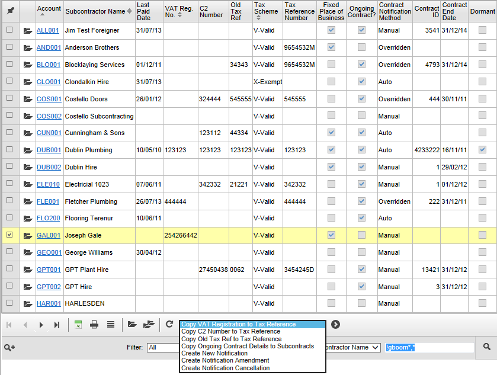

To fill in the RCT Tax Reference using existing VAT Registration or C2 numbers:
- Go to Subcontractor RCT Details Review/Update.

-
- In the Choose Action list in the button bar, select Copy VAT Registration to Tax Reference.
- Click
 to copy the details to the new RCT Reference field.
to copy the details to the new RCT Reference field. - Do the same for subcontractors whose RCT Reference is the same as their existing C2 Number, using the Copy C2 Number to Tax Reference action.
- Do the same for subcontractors whose RCT Reference is the same as their old tax reference, using Copy Old Tax Ref to Tax Reference.
- If you can't copy the RCT Reference from anywhere else, you can update the record to enter the reference manually; see eRCT - Recording Contract Registration in